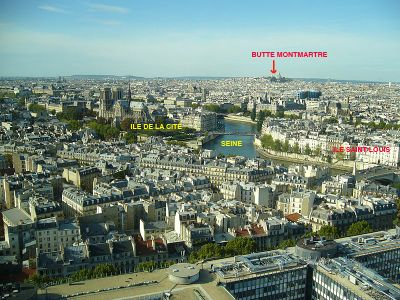
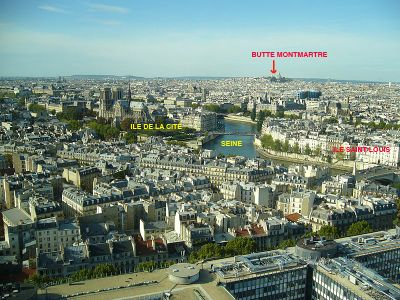

SITE DE PARIS
Pour en savoir plus, lis l’article : Géographie de Paris. Le site où la ville a commencé à être construite est une boucle de la Seine. La Seine a dévié son cours, car le méandre venait mordre, au nord le bas des pentes de la butte Montmartre et àl'ouest le bas de la colline de Chaillot. L'abandon de ce cours ancien a laissé une partie basse et longtemps marécageuse qui a donné le quartier du Marais. Le point culminant de Paris est situé sur la colline de Montmartre, il est à 131 mètres. À Paris la Seine a en moyenne 26 mètres d'altitude. Paris compte deux îles, l'île de la Cité et l'île Saint-Louis (qui est formée par la réunion au début du XVIIe siècle de deux îlots l'île aux vaches et l'île Notre-Dame), au centre de la capitale. Il existait une troisième île mais elle a été reliée à la ville. Mise à part le fleuve Seine, un autre cours d'eau traverse Paris, la rivière Bièvre. Elle se jetait à l'air libre dans la Seine au niveau de la Gare d'Austerlitz, mais elle fut recouverte en 1912 par souci d'hygiène. Elle est maintenant souterraine dans Paris, ainsi qu'en amont, sur une grande partie de son parcours en banlieue. En partie souterrain, un canal traverse le nord-est de Paris, il s'agit du canal Saint-Martin, qui est la partie terminale du canal de l'Ourcq. Connecté près du parc de la Villette aux deux précédents, le canal Saint-Denis rejoint la Seine après un court parcours dans le nord-est de Paris puis dans la proche banlieue au nord de la capitale. Le sous-sol de la ville est calcaire et il fut exploité pour construire les bâtiments, ce qui explique que l'on trouve des carrières sous Paris.
 

DÉMOGRAPHIE
La population de la ville de Paris est de 2 211 297 habitants en 20081, mais 11,8 millions habitent dans son agglomération et ses alentours. Paris est une mégapole, c'est-à-dire une ville géante. Pour peser face à elle, les autres grandes villes, nommées « métropoles d'équilibre », comme Lyon, Nantes, Lille, Marseille... s'efforcent d'accueillir beaucoup d'infrastructures importantes. On trouve les quartiers les plus riches à l'ouest de la capitale tandis que les quartiers les plus populaires se trouvent au nord-est de la ville dans les 18e, 19e et 20e arrondissements. L'arrondissement le plus peuplé est le 15e arrondissement avec 236 000 habitants comptabilisés lors du dernier recensement (2008). Globalement, les habitants se concentrent dans les arrondissements extérieurs de la ville, du 12e au 20e. Les arrondissements centraux ne sont pas très peuplés car on y trouve surtout les bureaux, les monuments, les ministères, etc. Depuis 10 ans, la population de Paris augmente après avoir subi une diminution au XXe siècle.